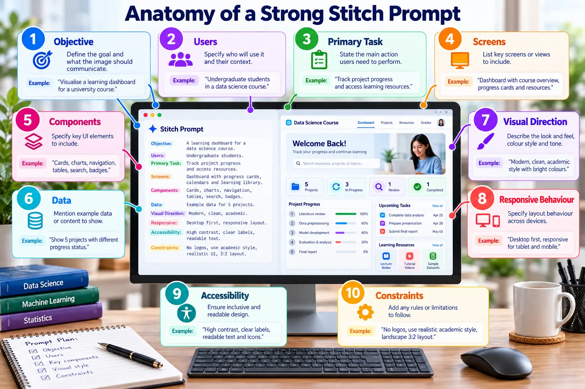

Requirements and Prompt Design
Convert system requirements into precise, testable instructions for Google Stitch.

Ten-part prompt framework
Objective and usersDefine the goal, audience and context.
Task and screensState the primary action and required views.
Components and dataList UI elements and realistic content.
Visual directionDescribe hierarchy, tone and design rules.
Responsive behaviourExplain desktop, tablet and mobile adaptation.
Accessibility and constraintsRequire contrast, labels and responsible limits.
Reusable prompt
Create a responsive Data Pipeline Monitoring Dashboard for university data-engineering students. The primary task is to identify and recover a failed pipeline. Include dashboard, details, confirmation and success views. Use metric cards, a chart, recent-runs table, filters and accessible status indicators. Show realistic data, support desktop and mobile, and never communicate status through colour alone.
Prompt iteration
Generate Prompt V1
Capture the prompt and output.
Evaluate the mismatch
Identify missing requirements and weak hierarchy.
Write Prompt V2
Request targeted corrections and compare the revision.